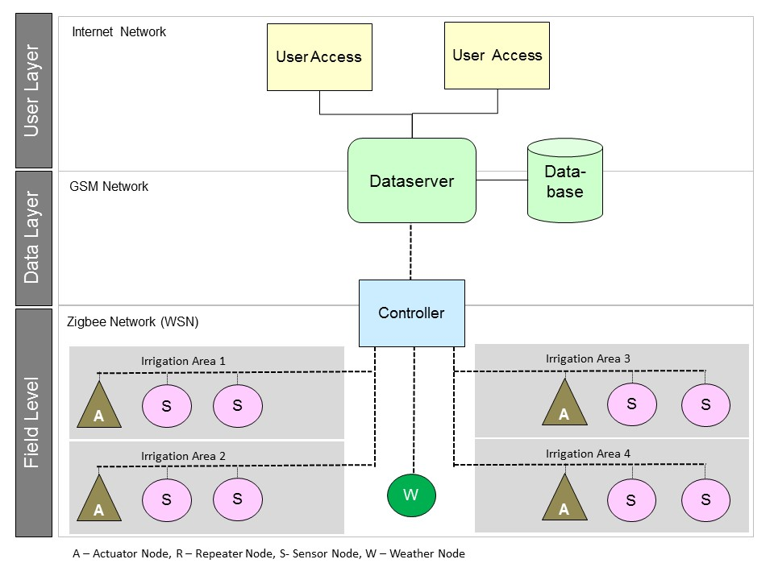
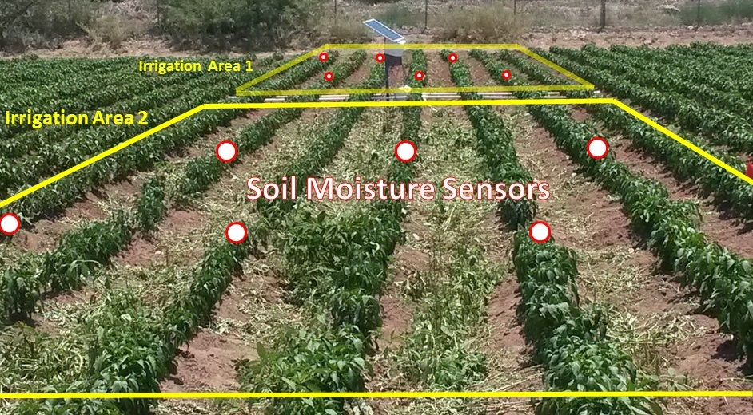
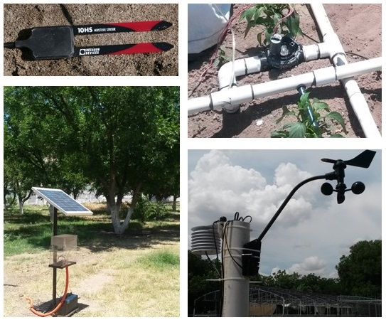

System Architecture
The experimental platform consist on a data acquisition and control system. A modular and scalable design approach is considered in order to provide different levels of access with diffrent data contents.
Sensor and Actuator Nodes
The sensor node contains three soil moisture sensors to measure volumetric water conten at the crop root level. The actuator node controls and irrigation valve and measures water flow. There are three types of operation modes: manual (valves are activated by the user), scheduler (irrigation is activated automatically according to a weekly scheduling) and automatic (irrigation is activated automatically according to soil moisture levels).
Weather and Controller Nodes
The weather node is used to calculate the reference evapotranspiration ETo from the environmental variables according to the Penman-Monteith formula. The controller node produces aggregated information from different sensor raw data. The wireles sensor network is implemented over the IEEE 802.15.4 communication protocol. The controller node includes an internet access to upload information to cloud IoT platform like ThingSpeak.
